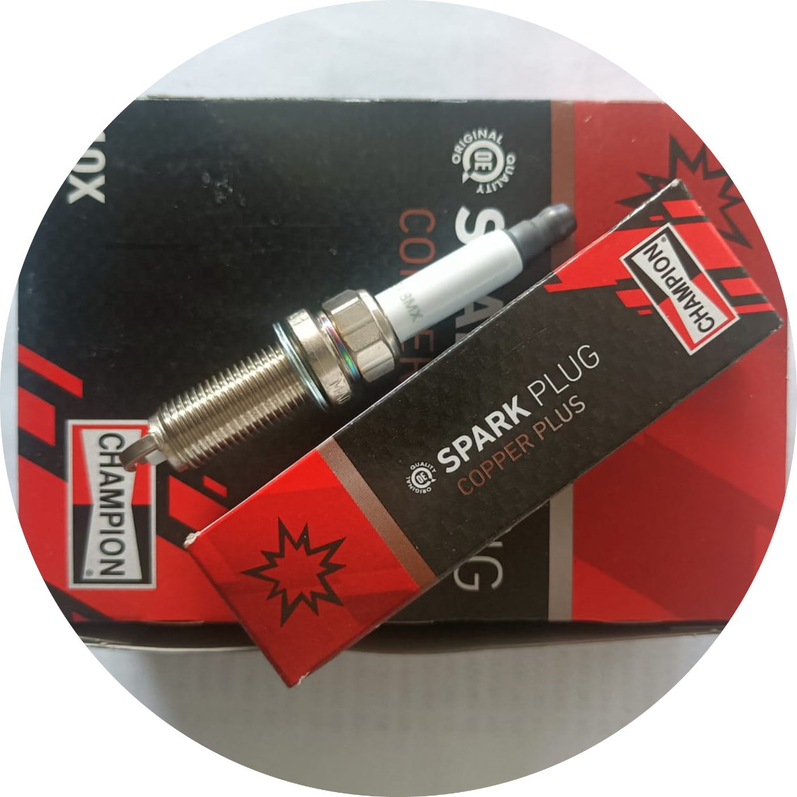
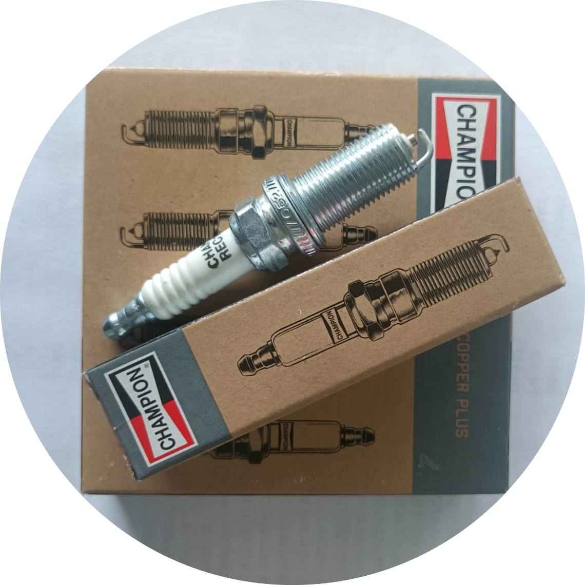
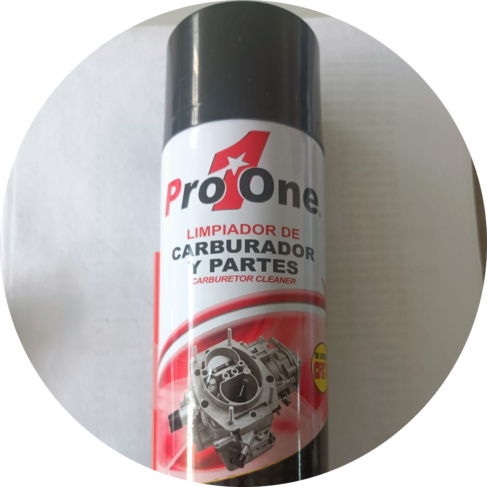

-

BUJIA CHAMPION 10pz
-

BUJIA CHAMPION 4pz
-

LIMPIADOR DE PARTES
HISTORIA
Refacciones Victorino es una empresa 100% familiar fundada por Don Candelario Victorino Tejada en el año de 1975, en la ciudad de Durango, Dgo. Desde entonces, la empresa oferta refacciones para automóviles importados y nacionales. Cada uno de nuestros colaboradores está aquí para ayudarle; el personal cuenta con gran conocimiento y experiencia y con gusto lo compartirá con usted.
Nuestra Misión
Ser la empresa líder en venta de refacciones para automóviles nacionales e importados en la ciudad de Durango.
Nuestra Visión
Convertirnos en una empresa con presencia en diferentes ciudades de México.
NUESTRAS SUCURSALES
Matriz
Maria Bayona 505, Col. del Maestro | Durango, dgo | CP: 34240 | 618 818 8180
Sucursal Durango
Durango 1103, Barrio de Tierra Blanca | Durango, dgo | CP: 34000 | 618 185 6889
Sucursal Plaza Hito
Prolongación Felipe Pescador 1125, esquina con Calle Guadalupe | Durango, dgo | CP: 34000 | 6181951744